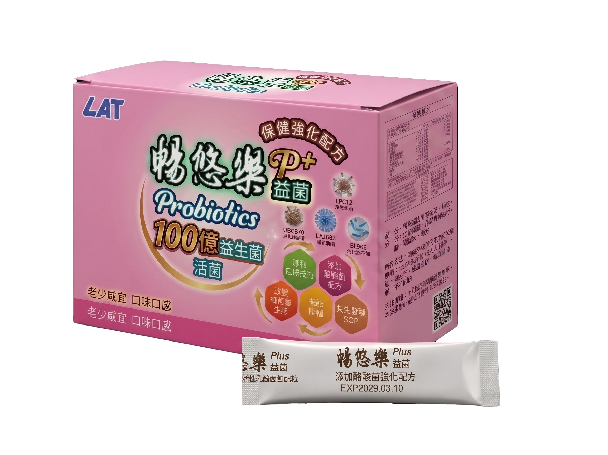

1 盒 90 包入：針對亞洲人體質研發的「深層管理方案」。
科學定量 2.0g，保證 100 億活菌穩定定殖。

耐酸耐鹽測試：模擬胃酸 pH 3.0，確保活性抵達
Caco-2 細胞吸附實驗：超高吸附率，穩定定殖長效作用
益生菌 + 益生元 + 後生元 = 合生元
| 菌種組成 (編號) | 精英配方守護專長 |
|---|---|
| LA1063 嗜酸乳桿菌 | 強效耐酸定殖，建立第一道物理防禦屏障。 (私密守護) |
| BL986 長雙歧桿菌 | 改善生理排便困擾，維持菌叢穩定。 (消化引擎) |
| LPC12 副乾酪乳桿菌 | 調節環境換季反應，強化防護力。 (防護之盾) |
| LF26 發酵乳桿菌 | 優化微生態平衡。 (代謝強化) |
| ST30 嗜熱鏈球菌 | 產乳酸能力優異，協助菌株發酵。 (免疫平衡) |
| LH43 瑞士乳桿菌 | 輔助消化與吸收，維持每日機能。 (消化溫和) |
| KM116 脆壁克魯維酵母菌 | 調節環境並優化吸收效率。 (風味與活性) |
| UBCB70 酪酸菌 | 專利包埋技術，修復穩定黏膜屏障。 |
| LRH10 鼠李糖乳桿菌 | 極致環境耐受性，長期穩定定殖。 |
精英配方，聯手打造全方位防護